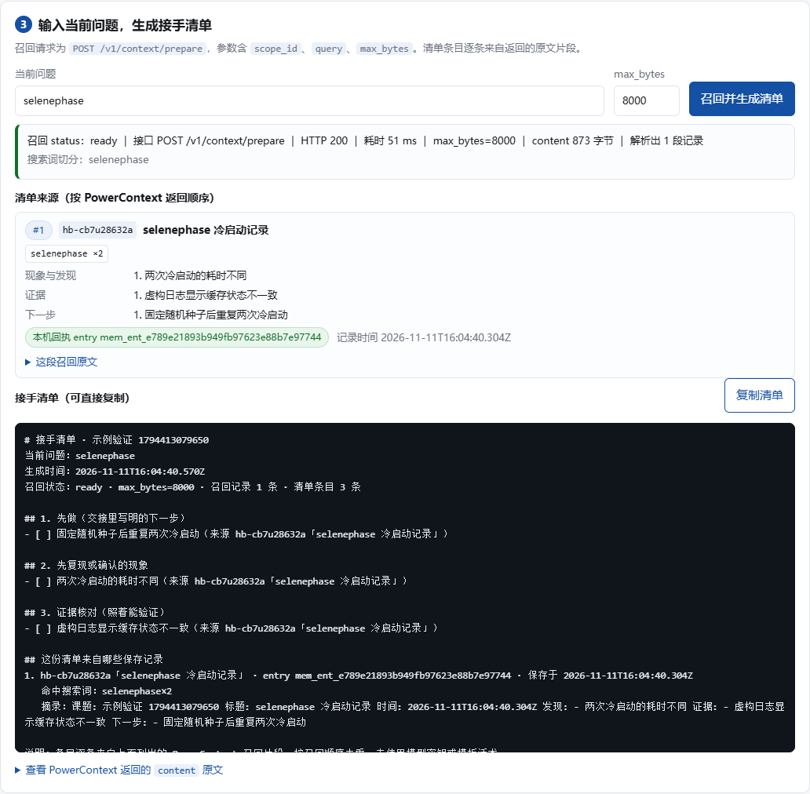

课题交接簿
保存一次交接的发现、证据、下一步；按当前问题从 PowerContext 召回，生成可复制的接手清单。
本机运行声明：应用只监听
127.0.0.1（默认 8787），拒绝非本机 Host 请求；不使用真实用户数据、不调用任何公网 API，页面与验收里出现的课题、人名、日志全部为原创虚构素材。界面截图

课题交接簿做了什么
- 第 1 步 回到课题：课题名派生成稳定的
idempotency_key，同名课题复用同一个scope_id。 - 第 2 步 保存交接：标题、现象与发现、证据、结论、下一步（必填）、风险，写入一条记忆并带上记录号
hb-xxxxxxxxxx。 - 第 3 步 召回清单：输入当前问题，得到按原文片段排版的接手清单，每条都能溯源到记录号；无结果时只给提示，不编造。
- 第 4 步 本机回执：只记录「调用过什么、返回的 entry 是什么」，召回内容本身不落盘。
PowerContext
PowerContext 保存与召回交接记录，应用按来源组织清单。查看源码、运行说明和验收记录。
固定源码版本：dab240063bfcfa7917898dc44da4baadb3747bd0 本机地址：http://127.0.0.1:18379 用到的接口：POST /v1/scopes · POST /v1/memory/remember · POST /v1/context/prepare
验收流程
npm start # 启动应用（Node 22+，只监听 127.0.0.1:8787） npm run verify # 端到端验证：直接调 PowerContext + 真实调应用接口 npm run verify:offline # 服务不可用时只验应用侧
验证脚本逐条打印本机实际请求的返回值，原样保存到 docs/test-output/verify-<运行编号>.txt，不人工修饰。
35 项测试结果
PASS 35FAIL 0SKIP 0
- 0 运行环境（1 项）：Node 版本满足 22+
- 1 PowerContext 契约（6 项）：创建课题返回 scope_id、同幂等键复用、两条保存返回可区分 entry、prepare 命中记录标记
- 2 启动与首页（3 项）：127.0.0.1 监听并报告配置、页面与脚本同源且带 CSP、拒绝非本机 Host
- 3 保存与召回（8 项）：项目名拿 scope、保存两条可区分、召回命中相关问题、清单全部溯源、搜索词与原文对应
- 4 换问题（1 项）：第二次召回命中另一条记录
- 5 重启应用（2 项）：同名课题回到同一 scope、重启后仍召回两条交接
- 6 课题隔离（3 项）：不同课题 scope 不同，且两个方向都不串记录
- 7 无结果（3 项）：空课题不编造条目、不串已保存课题、给出可读提示
- 8 文本安全（5 项）：伪造 hb- 标记消歧、超长字段 400、缺「下一步」400、非法 max_bytes 400、特殊字符不崩溃
- 9 错误反馈（3 项）：服务不可用返回 502 与可读原因、召回同样报错、进程不崩溃